🧑🏫 Lecture 14
Vision Transformer (ViT) for TinyML
이번 시간은 Transformer 모델에서도 Vision에 주로 어떻게 사용하는지 알아보려고 합니다. 그리고 이를 경량화하거나 가속화하는 기법, 그리고 제한된 리소스에서 어떻게 잘 활용할 수 있을지 알아봅시다.
1. Basics of Vision Transformer (ViT)
Vision Transformer는 뭘까요? LLM으로 많이 사용하는 Language 모델의 경우, 입력으로 토큰이 들어와 Transformer 모델 구조로 Encoder, Decoder 구조에 따라 BERT(Encoder), GPT(Decoder) 그리고 BART, T5(Encoder - Decoder) 구조로 사용하죠. 그럼 Vision에서는 이 구조를 어떻게 사용할까요?
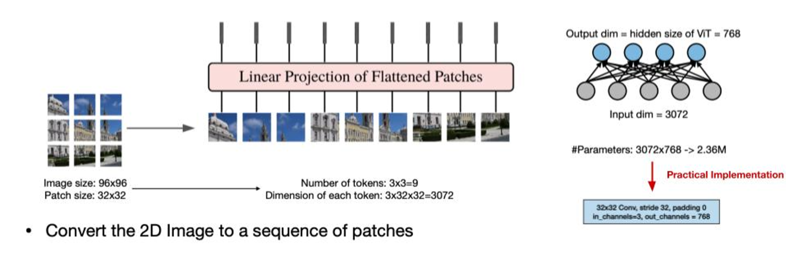
생각보다 간단해요. 이미지가 만약 96x96이 있다면 이름 32x32 이미지 9개로 나눕니다. 나눈 이미지를 Patch라고 부를게요. 그럼 이 Patch를 Linear Projection을 통해서 토큰처럼 768개의 Vision Transformer(ViT)의 입력으로 들어갑니다. 실제로 아이디어를 구현할 때는 32x32 Convolution 레이어에 stride 32, padding 0, 입력 채널 3, 출력 채널 768로 연산합니다. 그 다음은, 입력이 동일해 졌으니 모델 구조는 흔히 보는 아래 그림의 구조를 사용하죠.
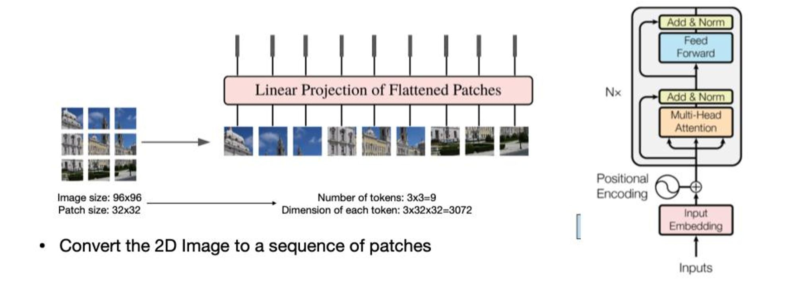
여기서 Patch 의 크기 또한 파라미터로 할 수 있습니다. 앞으로 ViT를 말할 때는 Patch도 유심히 보셔야할 겁니다.
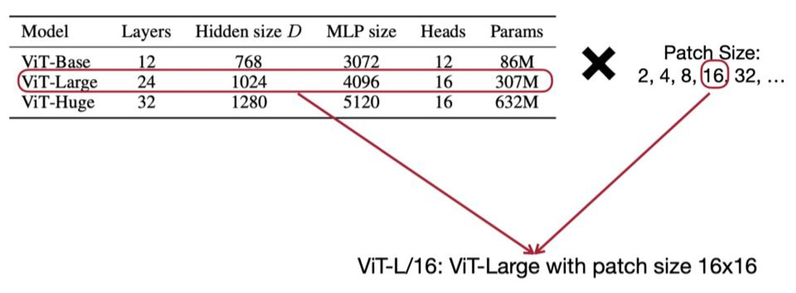
그런데 왜 Vision Transformer를 쓸까요? 기존에 CNN 구조에 ResNet이나 MobileNet의 구조도 충분히 성능이 괜찮지 않나요? CNN과 Transformer를 Vision task에서 비교해보면 훈련 데이터수가 적을 때는 확실히 CNN이 강세를 보이죠.
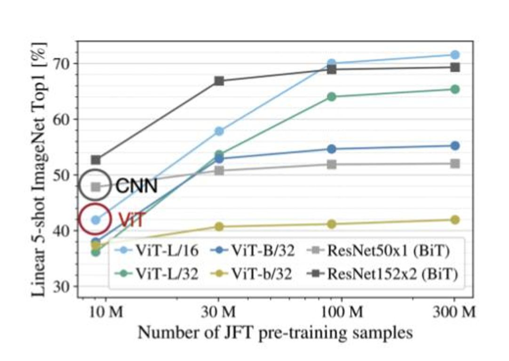
하.지.만. 데이터수가 300M인 경우를 살펴보시죠. ViT는 데이터수가 많으면 많을 수록 CNN에 비해서 훨씬 강세를 보이는 것을 확인할 수 있죠? 이 때문에, 저희는 ViT에 매료될 수 밖에 없었습니다.
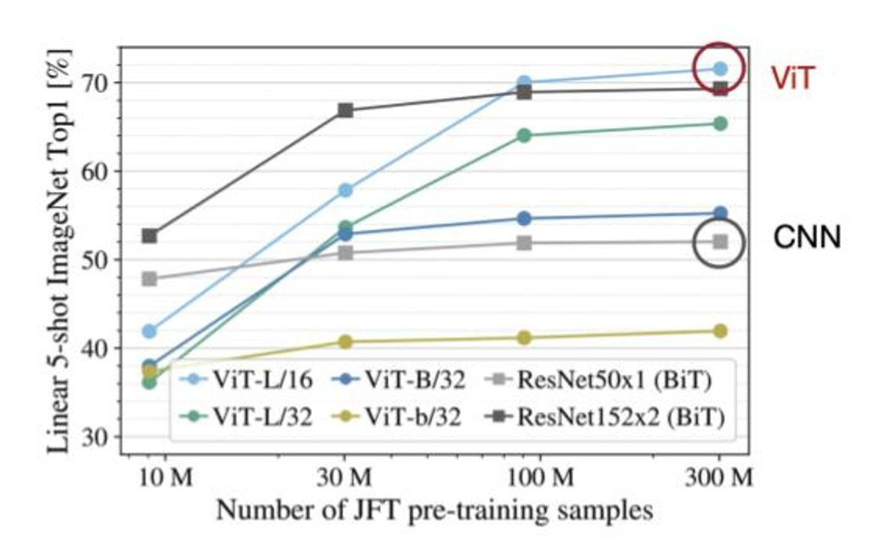
Vision에 대한 Application으로 Medical Image Segmentation, Super Resolution, Autonomous Driving, Segmentation로써 주로 사용해요.
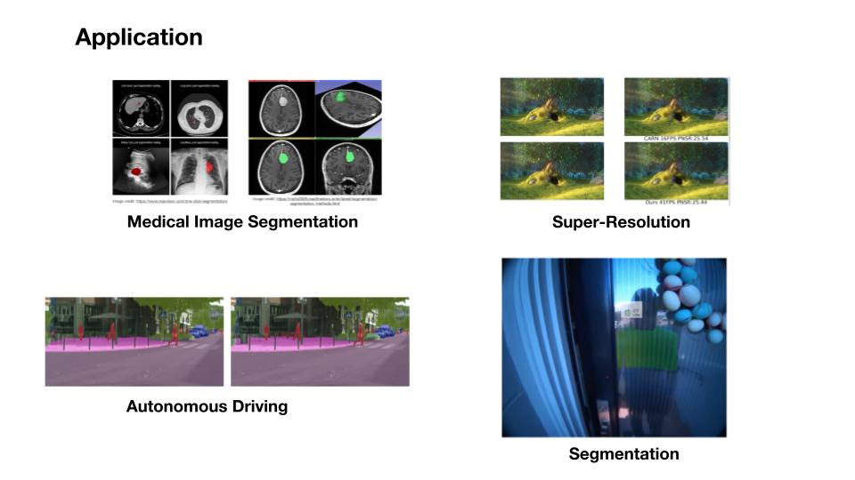
문제는 이 어플리케이션들은 모두 High resolution에 prediction을 요구하지만, ViT는 Input resolution이 높아질 때마다 연산량이 어마어마해집니다. 선형적이라기 보단 지수적으로 증가하는 것 처럼 보이네요. 바로 이 문제 때문에, 우리가 “Efficient and Acceleration”에 대해서 고민할 수 밖에 없게 됩니다.
*mIoU: mean Intersection of Union, GMAC: Giga Multiply and Add Computation
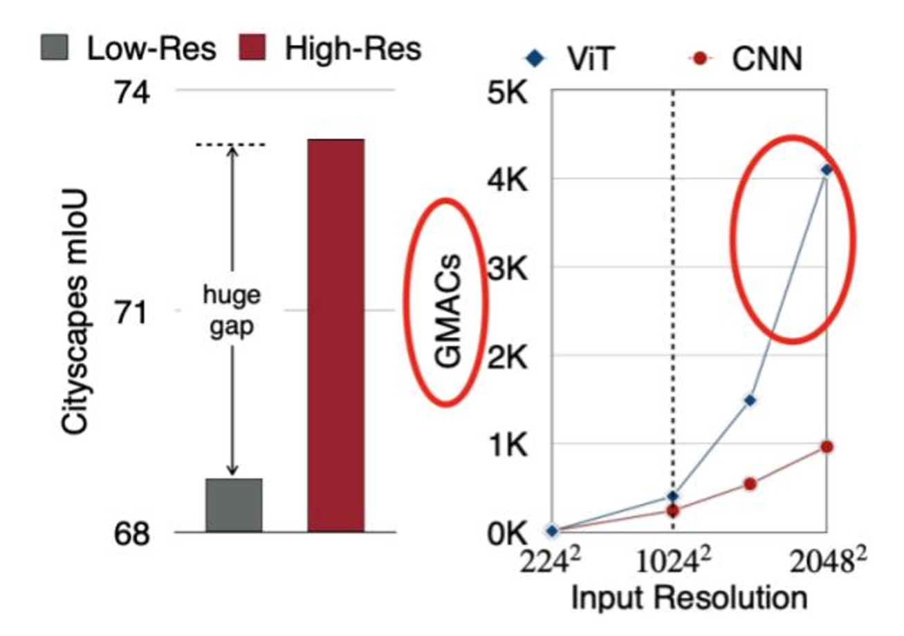
2. Efficient ViT & acceleration techniques
2.1 Window attention
처음으로 소개할 기술은 Window attention 입니다. 기존에 attention은 레이어마다 patch의 크기가 동일하게 들어가겠죠. 하지만 Window attention은 레이어마다 patch의 크기를 다르게 하는 방법입니다. 그.리.고. 여기서 중요한 건 Window attention은 그 Patch안에 다시 Patch를 하는 방법입니다. 그리고 이를 통해 병렬연산을 가능하게 만드는 거죠.
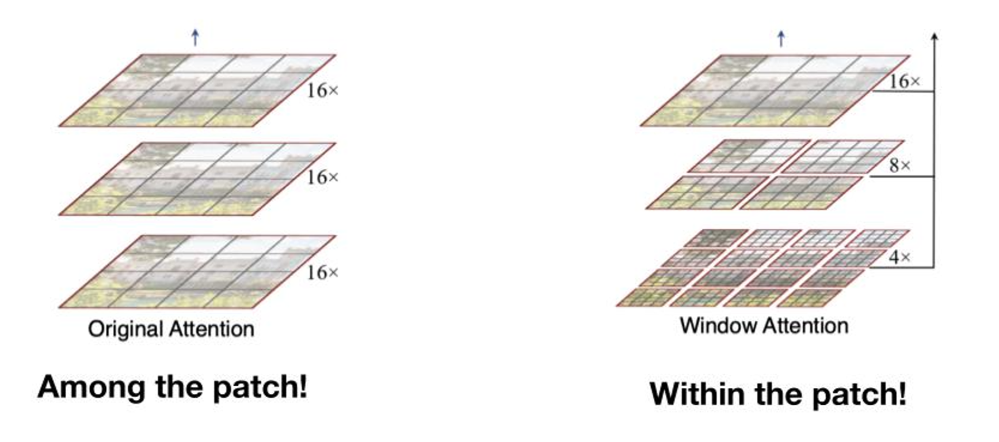
하지만 저렇게 연산하면 문제점이 Window간 정보교환이 없다는 점인데요. 이는 레이어별로 “Shift Window”를 통해 해결합니다.
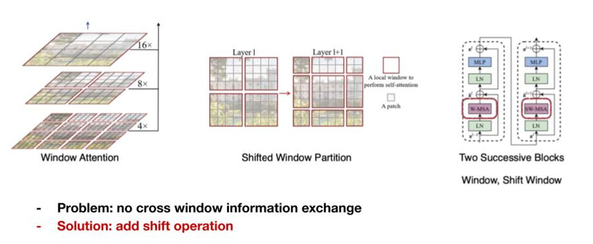
2.2 Linear attention
두 번째 소개할 기술은 Linear attention 입니다. 기존에 Attention 연산중에 Softmax가 있었죠? exponential 연산은 직접 구현해보면 연산량이 쪼금 힘듭니다. 그래서 이를 Linear 레이어인 Relu로 대체를 하는데요. 여기서 알고리즘 복잡도가 O(\(n^2\))인 부분까지 행렬의 곱셈에서 결합법칙이 가능하다는 부분을 이용해 O(\(n\))으로 줄여버립니다. 마지막 복잡도가 줄어드는 것이 이해가 안가신 다면, Scale이후에 나오는 레이어가 \(n \times d\) 인 점과 n-차원과 d-차원에 대해서 비교해보시면 빠르게 납득이 가실겁니다!
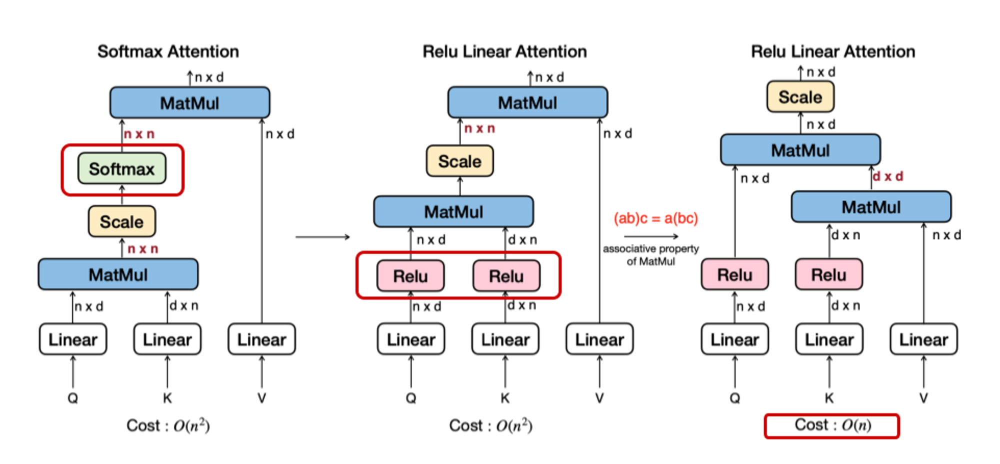
하지만 여기서도 문제가 있습니다. attention에서 성능을 보는 방법중에 attention map을 통해 보면 Linear Attention이 사진의 특징을 잘 못잡아 냅니다.
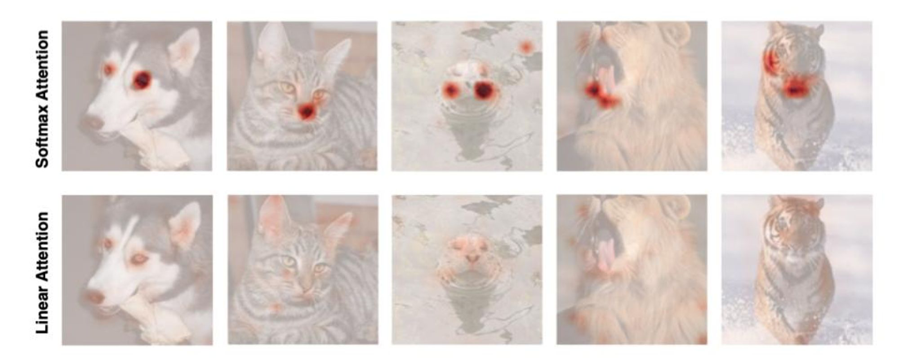
당연히 Softmax 보다 distribution이 날카롭지 않기 때문에 특징점에서도 두드러지지 않는게 문제죠. 성능도, 나오지 않을 것이구요. “Multi-scale” learning을 하기가 어려울 겁니다.
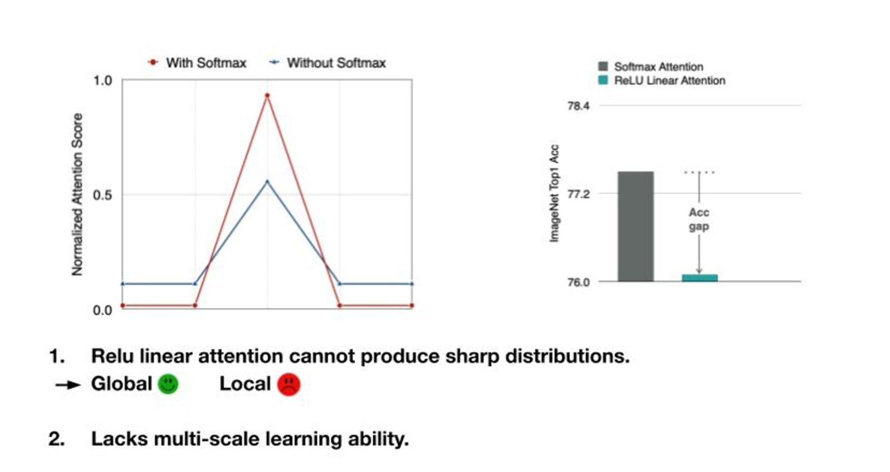
해결해야겠죠? 방법은 레이어를 하나 더 넣으면 됩니다. 성능도 오히려 전보다 훨씬 좋아졌네요.
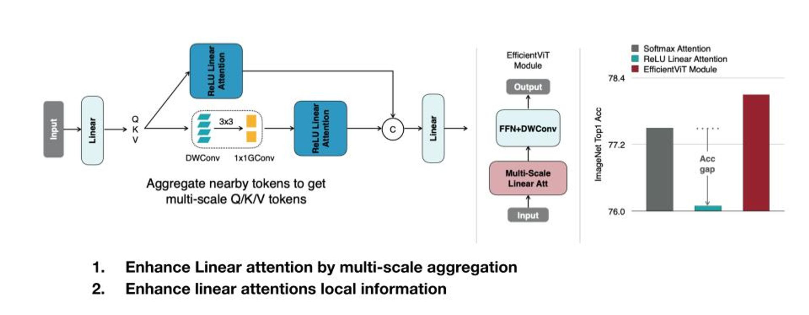
2.3 Sparse attention
세 번째 기술을 소개드리기 전에, Vision Application을 하다 보면 아래와 같은 상황이 많습니다. 이미지의 해상도를 줄이거나, Pruning을 통해 이미지가 특정부분만 들어오게되는 경우가 있죠.
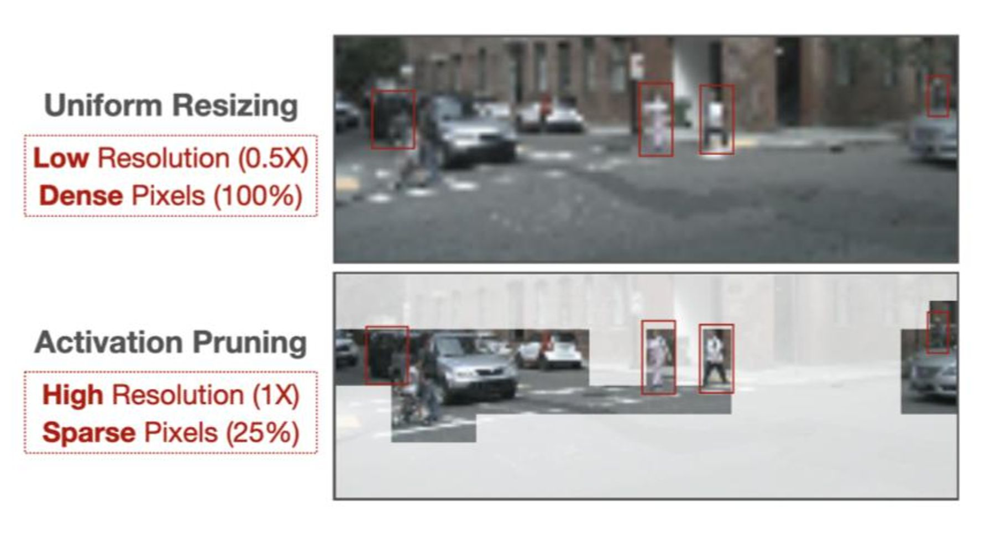
그래서, Sparse attention이라는 기술을 사용합니다. 이 기술을 Pruning 과 비슷하게 Patch마다 Importance를 계산해 줄을 세웁니다.
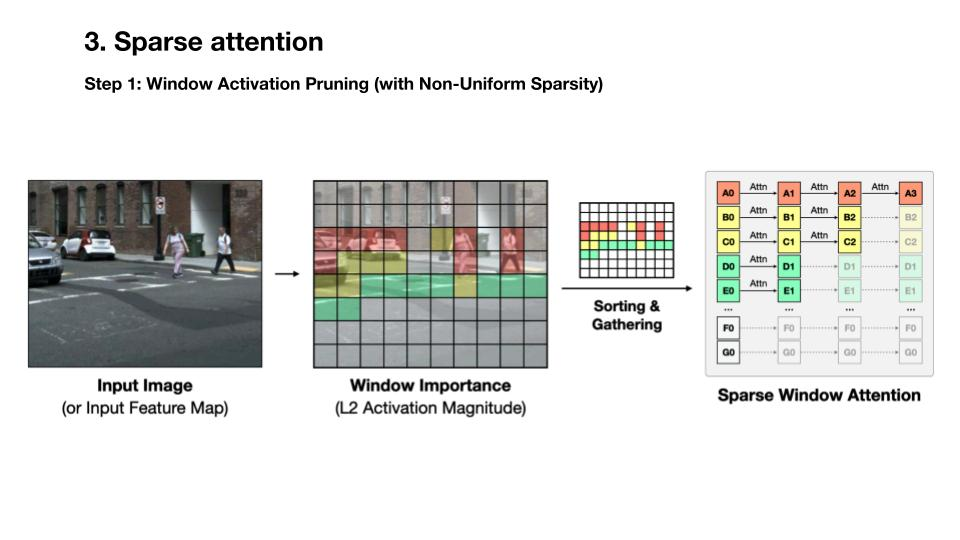
그리고 줄을 세운 Patch에서 N번의 반복하는 fine-tuning을 통해 모델을 재학습시키죠.
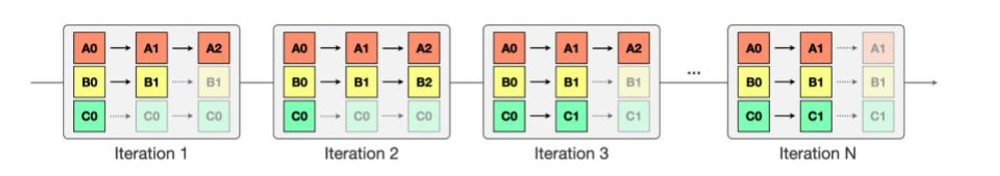
여기서 Constraint에 만족하는 조합을 찾기 위해 Evolutionary Search를 이용합니다(Evolutionary Search는 Lab 3를 참고해주세요).
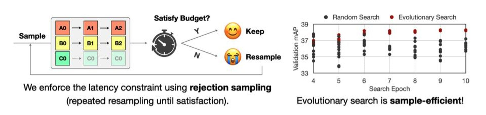
성능이 궁금하다면 이 논문을 참고해주세요 :)
3. Self-supervised learning for ViT
Efficient + Acceleration에 대한 기술은 여기까지입니다. 그럼 다시 처음으로 돌아가서, 혹시 Vision Transformer 첫 성능 그래프 기억하시나요? 데이터가 어마어마하게 많아야 했던 부분이요(아래에 가져와 봤습니다). 그런데, 이렇게 데이터를 많이 구하는 건 현실적으로 많이 어려울 수 밖에 없습니다. 대표적인 예시로 의료데이터가 그렇죠. 그럼 이 데이터가 부족한 건 어떻게 해결할 수 있을까요?
3.1 Contrastive learning
첫번째 방법은 Contrastive learning 입니다. 이 방법은 TinyML에서 뿐 아니라 많이 쓰이는 방법인데, Positive Sample과 Negative Sample을 가지고 embedding vector를 멀게 하는 방식입니다. 예를 들어, 고양이 사진을 구분하는 테스크에서 Positive Sample은 고양이 사진이 될 것이고, Negative Sample은 여기서 강아지 사진이 될 겁니다.
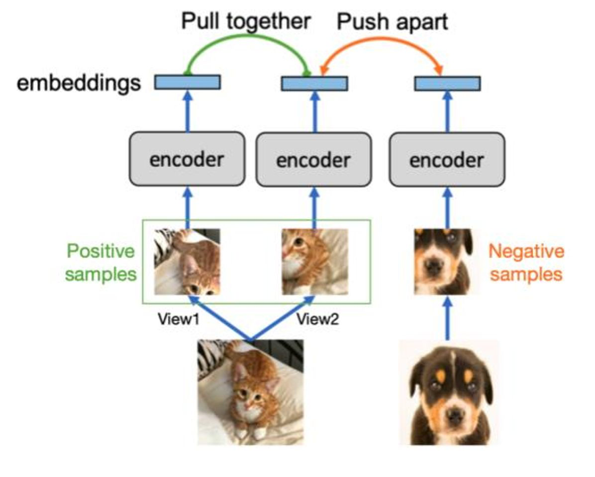
실험결과를 보면 Supervised 방법으로는 CIFAR-100, Oxford Flowers-102, Oxford-IIIT Pets 데이터 셋에서는 모델 성능이 나오지 않지만, 위 방법을 적용한 모델은 성능이 어느정도 나오는 것을 볼 수 있습니다.
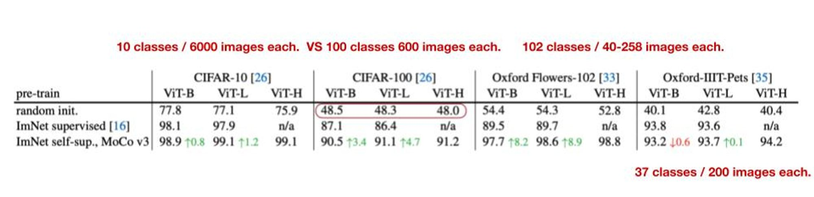
Contrastive Learning으로 Multi-Modal을 사용할 수도 있습니다. 아래 논문은 텍스트와 이미지를 모두 받는 형태로 디자인돼 있습니다.
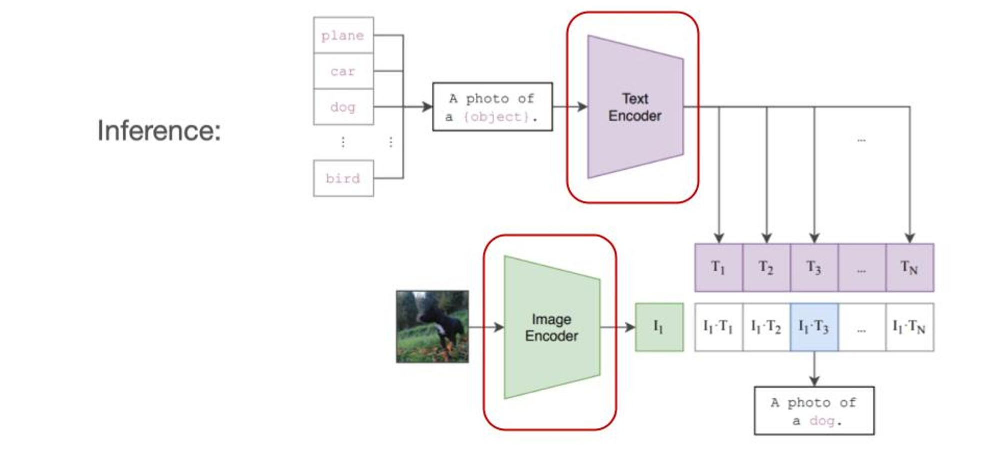
3.2 Masked image modeling
두번째 방법은 Mask 입니다. 아래 모델 구조를 보시죠.
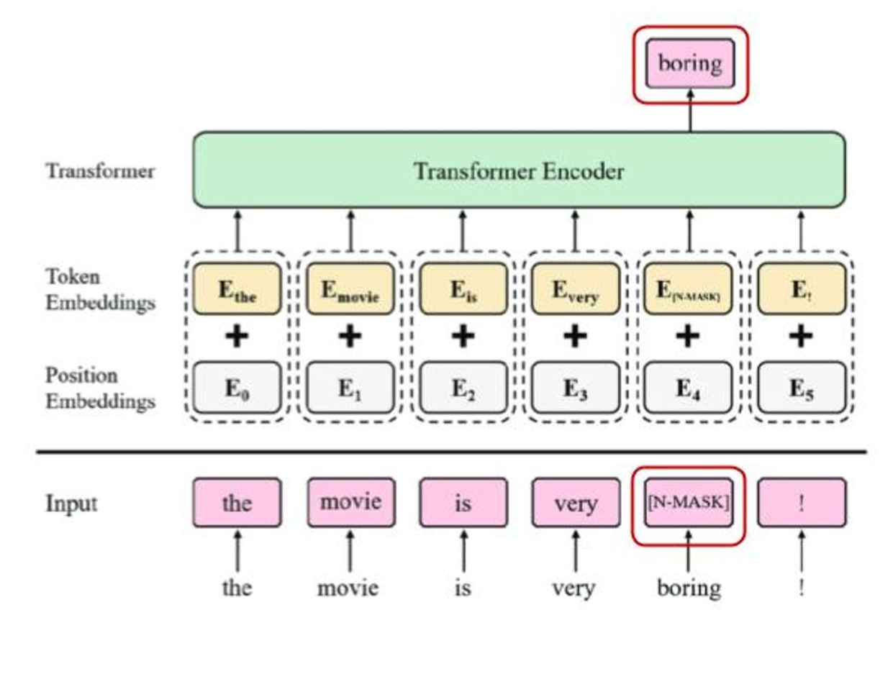
BERT 모델입니다. Mask방법은 입력 토큰에 마스크를 씌워 출력에서 이를 맞추는 테스크로 모델을 훈련시키는 방법입니다. 그럼 Vision은 어떻게 할까요?
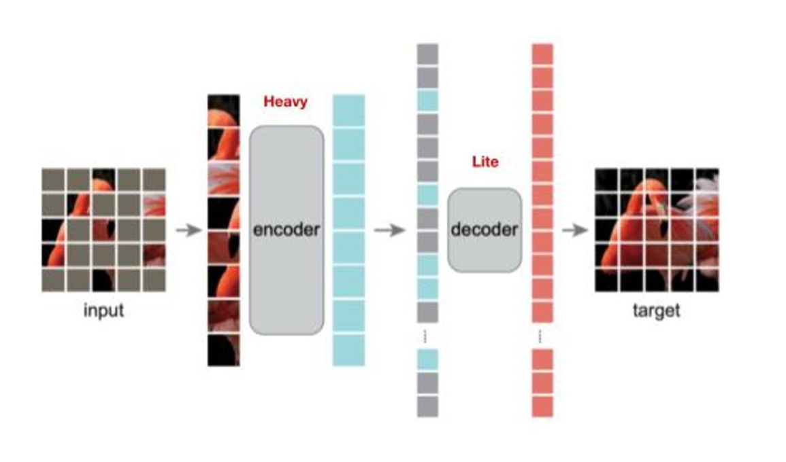
LLM과 훈련하는 방식은 Mask를 씌우고 이를 예측하도록 하는 훈련인 것은 비슷합니다. 다만 ViT의 경우 Encoder와 Decoder가 같이 있으면서 Encoder보다는 Decoder의 모델크기가 더 작다는 걸 강조합니다. 흥미로운 부분은 Masking ratio가 BERT의 경우 15%인 반면, 아래 실험결과에서 ViT의 경우는 무려 75%나 됩니다. 강의노트에서는 “이미지가 언어보다 더 information density가 낮아서 그렇다.”라고 말합니다.
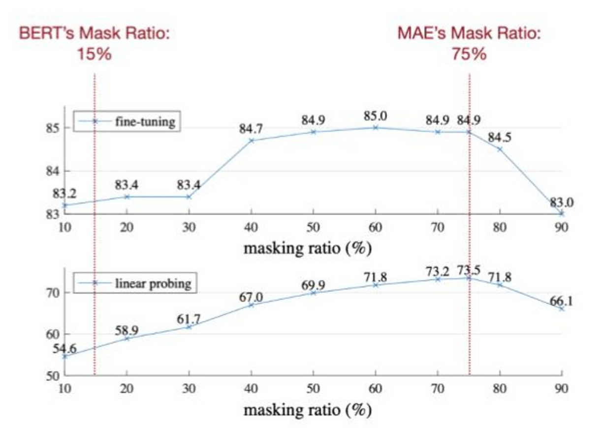
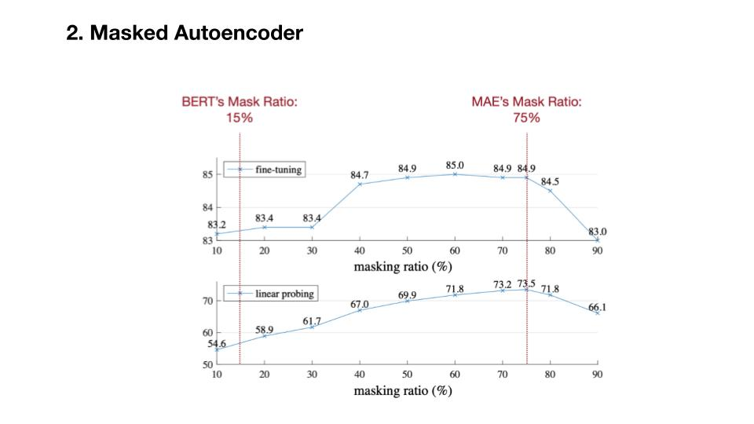
4. Multi-modal LLM
마지막으로 Multi-modal LLM에 대해서 언급을 하는데, 자세한 내용은 다루지 않아 궁금하신 분들을 위해 논문은 링크로 달아두고 설명은 넘어가도록 하겠습니다. 여기까지 Vision Transformer 였습니다. LLM과 비슷하면서도 모델크기가 똑같다면 연산량 높은 것과 데이터가 부족한 것을 어떻게 해결하는가가 중점인 강의였습니다. 다음 시간에는 GAN, Video, and Point Cloud로 돌아오겠습니다 :D